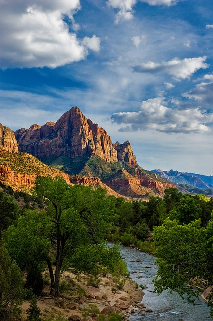
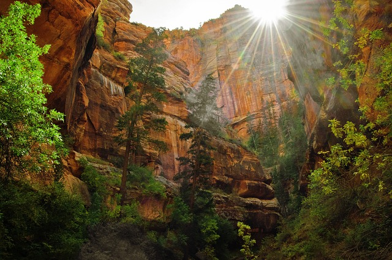
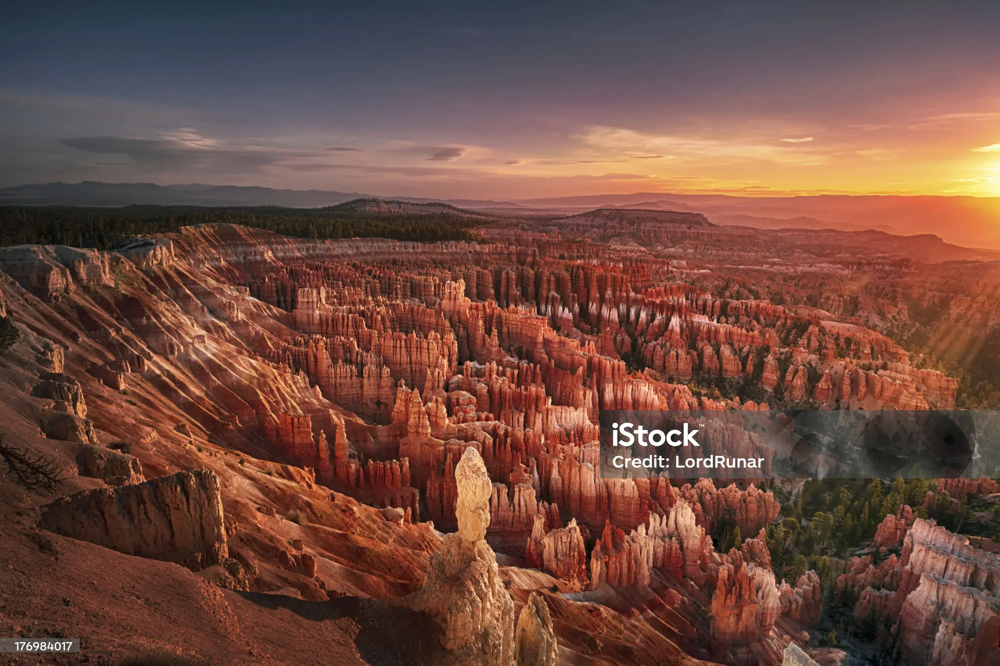
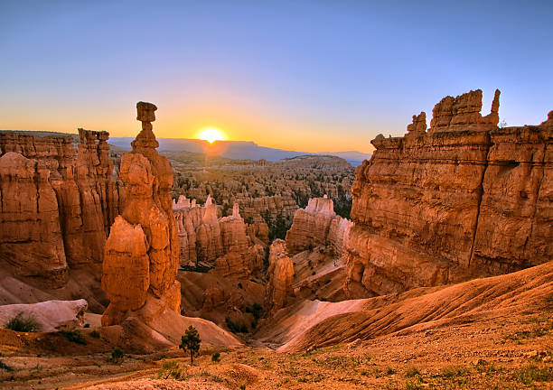
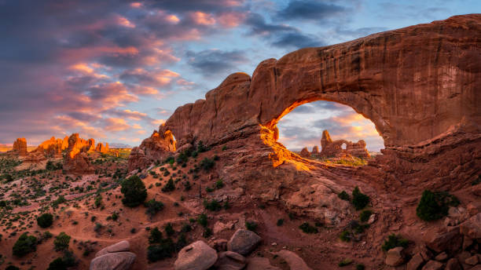
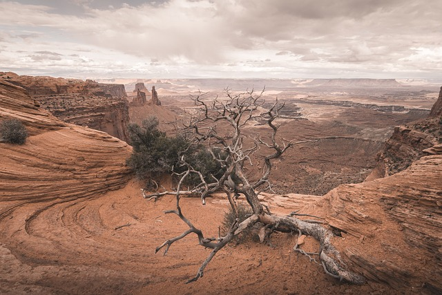
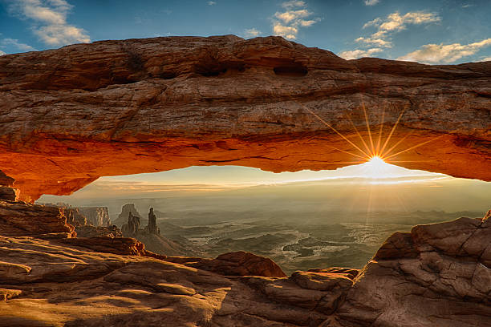
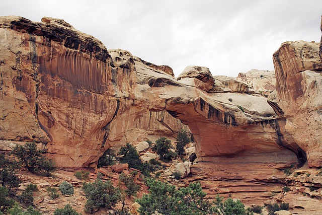
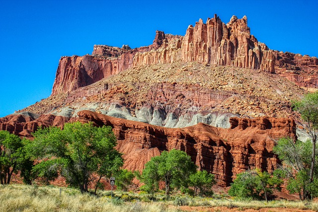

Welcome to Utah's National Parks
Your guide to the stunning beauty and adventures that await you.
Zion National Park

Overview
Zion National Park, established in 1919, is renowned for its stunning red rock formations, canyons, and diverse ecosystems. The park features towering cliffs, such as the iconic Zion Canyon, and offers a variety of hiking trails, including the famous Angels Landing and The Narrows. Visitors can explore lush vegetation, unique wildlife, and breathtaking vistas, making it a paradise for outdoor enthusiasts and photographers.
Popular Activities
- Hiking Angels Landing
- Exploring The Narrows
- Wildlife Viewing
- Photography
- Biking along the Scenic Drive

Bryce Canyon National Park

Overview
Bryce Canyon National Park, established in 1928, is famous for its unique geological formations known as hoodoos—tall, thin spires of rock that create a surreal landscape. The park’s elevation ranges from 8,000 to 9,000 feet, offering stunning views, especially at sunrise and sunset. Visitors can explore a variety of hiking trails that immerse them in the park's breathtaking scenery and rich history.
Popular Activities
- Hiking the Rim Trail
- Exploring the Queen's Garden
- Stargazing
- Photography at Sunrise Point
- Wildlife Watching

Arches National Park

Overview
Established in 1971, Arches National Park is home to over 2,000 natural stone arches, making it one of the most remarkable geological wonders in the world. The park features dramatic rock formations, deep canyons, and expansive deserts. Visitors can hike to iconic sites like Delicate Arch and Landscape Arch while enjoying the park’s stunning vistas and diverse desert ecosystems.
Popular Activities
- Hiking to Delicate Arch
- Exploring Landscape Arch
- Photography at Park Avenue
- Stargazing
- Biking on scenic roads

Canyonlands National Park

Overview
Canyonlands National Park, established in 1964, features a vast landscape of canyons, mesas, and buttes carved by the Colorado River. Divided into four districts—Island in the Sky, The Needles, The Maze, and the Colorado River—each area offers unique experiences and breathtaking views. It’s a paradise for adventurers seeking hiking, mountain biking, and off-roading opportunities.
Popular Activities
- Hiking to Mesa Arch
- Exploring The Needles
- Mountain Biking
- Whitewater Rafting on the Colorado River
- Photography at Island in the Sky

Capitol Reef National Park

Overview
Capitol Reef National Park is known for its unique geologic features, including the Waterpocket Fold, a nearly 100-mile long warp in the Earth's crust. Established in 1971, the park showcases colorful cliffs, canyons, and rock formations. Visitors can explore historic fruit orchards, petroglyphs, and various hiking trails that reveal the park’s natural beauty and rich history.
Popular Activities
- Hiking the Hickman Bridge Trail
- Exploring Fruita Historic District
- Stargazing
- Photography at Capitol Dome
- Wildlife Viewing
